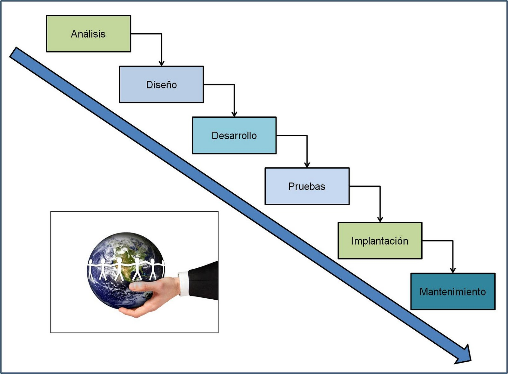

La metodología tradicional es un modelo de desarrollo de software que se basa en una planificación estructurada y organizada desde el inicio del proyecto. En esta metodología cada fase se desarrolla de manera ordenada, siguiendo un proceso definido hasta completar el sistema.
Este tipo de metodología busca mantener un mayor control sobre el proyecto, estableciendo tiempos, tareas y objetivos específicos para cada etapa del desarrollo.
